The Pea Square
How to Predict a Living Thing
A companion to Mendel — The Monk Who Counted

How to Predict a Living Thing
A companion to Mendel — The Monk Who Counted
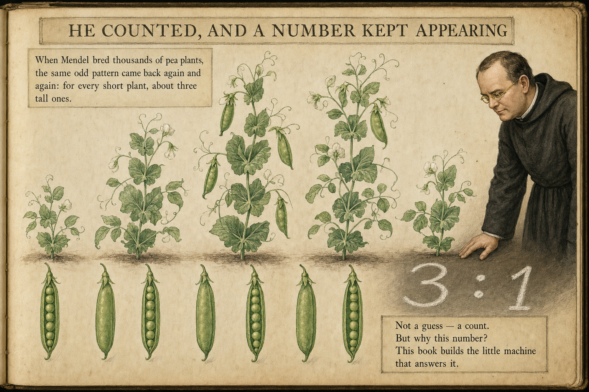
In a monastery garden in the 1860s, a monk named Gregor Mendel did something almost nobody had thought to do with living things: he counted.
He bred pea plants — thousands of them — and kept careful tallies of what grew. When he crossed certain tall plants with each other, he did not get all tall children, and he did not get half-and-half. Over and over, across thousands of plants, he got roughly three tall plants for every one short plant.
Not "about three." Not "three this time, something else next time." The same lopsided pattern came back again and again, in trait after trait: three of the one kind for every one of the other.
A number that stubborn is not an accident. It is a clue. Something underneath the garden was behaving like arithmetic — following a rule clean enough to produce the same ratio every time. Mendel could see the pattern. He could not yet see the machine that made it.
This whole book has one job: to build that machine — a little grid of four boxes — until the mysterious 3 : 1 stops being magic and becomes something you can work out yourself, with a pencil.
We will build it one piece at a time. By the end you will be able to predict the children of a cross before a single seed is planted — and know exactly why your prediction is right.
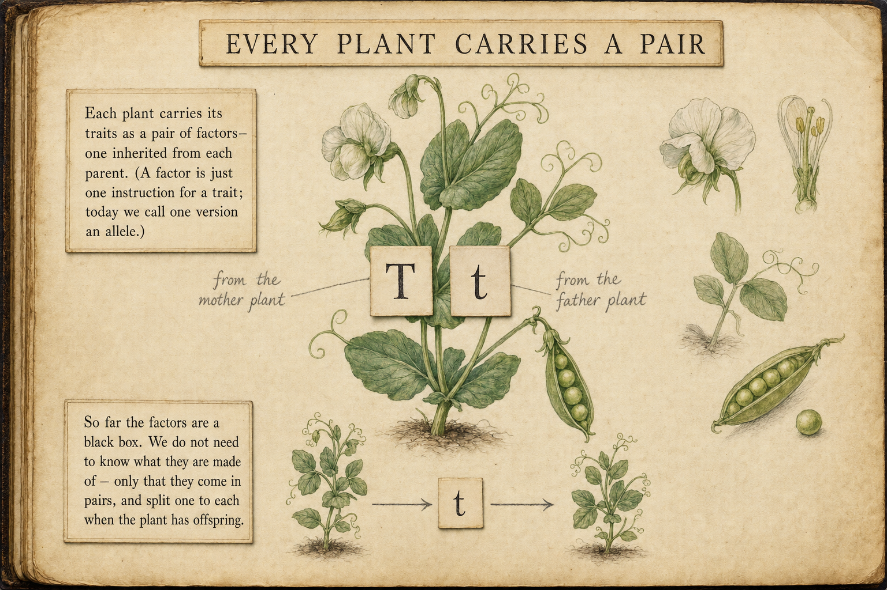
Here is the first piece of the machine. Every pea plant carries its traits as instructions Mendel called factors. And it carries them in pairs — two factors for each trait, one inherited from each parent.
That pairing is the key. When a plant grows up and has offspring of its own, it does not hand down both of its factors. It passes on just one of the pair to each child — picked at random — and the child's other factor comes from the other parent. Two parents, one factor each, and the child has a fresh pair.
That is the entire rule of inheritance at this level, and it is worth saying slowly because everything else is built on it:
Factors come in twos. A parent passes one of its two — chosen at random — to each child. The child gets one factor from each parent, making a new pair.
Notice what we are not claiming. We are not saying what a factor is made of, or where in the plant it lives. Mendel did not know either — he had never seen a cell up close, and nobody had heard of DNA. He treated the factor as a sealed box whose insides did not matter, as long as it obeyed the rule above.
We will do the same. There is a deeper story — about cells, and chromosomes, and the molecule that spells the instructions out — and it is worth telling another day. But it is a different book. Everything in this one falls out of the simple rule that factors come in pairs and split one-to-each. We are not hiding the deeper story; we are choosing, on purpose, to see how far the simple rule alone can take us. The answer turns out to be: surprisingly far.
Today scientists call one version of a factor an allele. We will meet that word again.
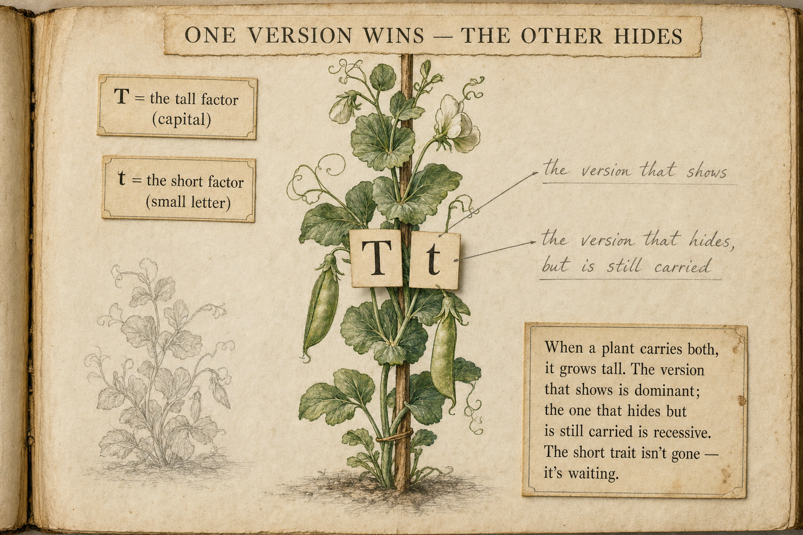
A factor can come in different versions. For height in peas there are two: a tall version and a short version. We need a way to write them down, and the convention Mendel's successors settled on is simple and clever:
The tall version gets a capital letter, T. The short version gets the same letter, lowercase, t. Same letter because they are two versions of one thing (height); different case so you can tell them apart at a glance.
Now: a plant has a pair, so it might carry two talls TT, two shorts tt, or one of each Tt. What happens with one of each? It grows tall. The tall version shows; the short version does not — even though it is right there in the pair.
The version that shows when both are present is called dominant. The version that stays hidden is called recessive. So tall is dominant, short is recessive — and a Tt plant looks exactly like a TT plant, even though it is secretly carrying a short factor it can pass on.
It is tempting to think the dominant version is bigger, better, healthier, or more common. None of that is true. "Dominant" only means this is the one you see when both are present — nothing more.
A recessive version is not weak and is not losing. It is simply quiet. In fact, plenty of recessive traits are extremely common in the world, and plenty of dominant ones are rare. Dominant is about what shows, never about what is better or what wins out in the long run.
Hold on to that, because the recessive factor — the one that hides — is about to do something surprising.
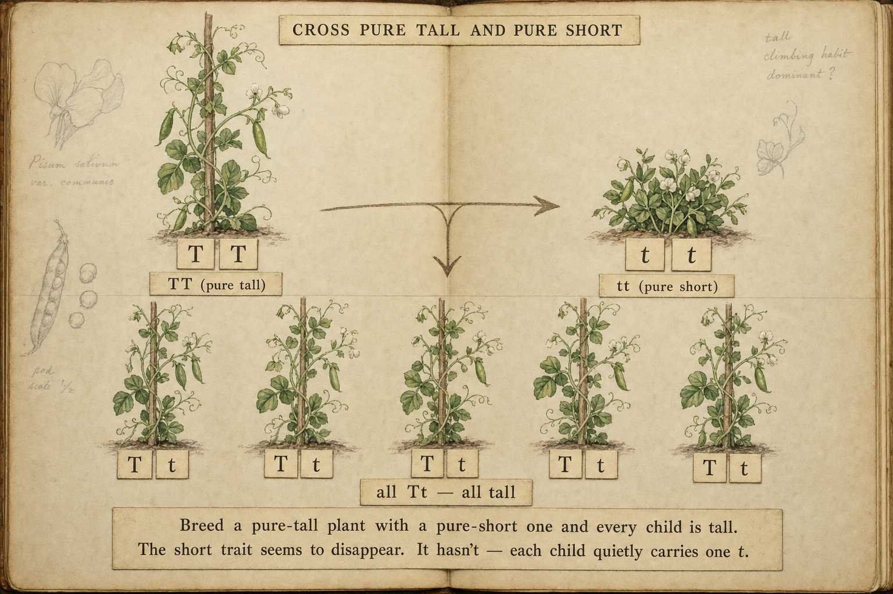
Mendel started clean. He took a plant that was pure tall — both factors tall, TT — and crossed it with one that was pure short — both factors short, tt.
Walk it through with the rule from page two. The tall parent can only pass on a T (that is all it has). The short parent can only pass on a t. So every single child receives one T and one t: every child is Tt.
And what does Tt look like? Tall. Every child is tall. The short trait has vanished completely from view. A whole generation, and not one short plant among them.
This is exactly the kind of thing that makes people throw up their hands and call heredity mysterious. The short trait was right there in a parent — where did it go?
It didn't go anywhere. Every one of those tall children is carrying a short factor, hidden inside its pair, waiting. Recessive means hidden, not gone.
That single idea — that the trait you cannot see is still being carried, still able to be passed on — is what the whole 3 : 1 mystery turns on. To see it reappear, we need the machine itself. Turn the page and we will build it.
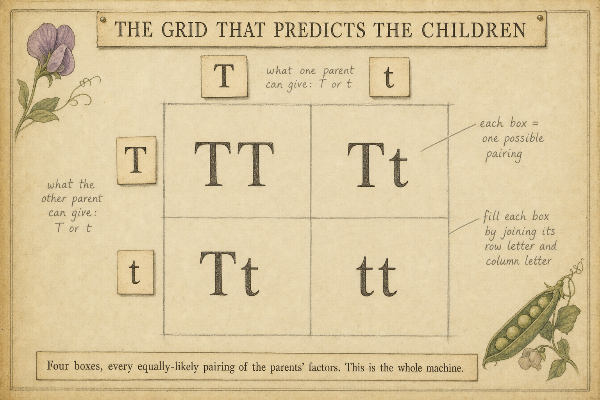
Here is the machine. It is a square divided into four boxes, and it is nothing more than a tidy way to list every possible child of a cross. It is called a Punnett square, after the biologist who drew it this way.
It works like the grid on the back of a multiplication table. Along the top edge you write the two factors one parent could pass on. Down the left edge you write the two factors the other parent could pass on. Then you fill each inner box by combining the letter at the top of its column with the letter at the side of its row.
That is the whole method. But notice why it works — this is the part the picture cannot say out loud:
Each parent passes one factor at random. The top edge lists the equally-likely things one parent can give; the side lists the equally-likely things the other can give. Pairing every top choice with every side choice gives every way the two could meet — and because each choice is equally likely, each of the four boxes is equally likely too.
So the square is not just a doodle. It is an honest accounting: four boxes, four equally-likely children. Whatever ratio falls out of those boxes is the real prediction for the cross. Now let's fill one in for the cross that made the mystery.
Remember those all-tall children from page four? Each one is a hybrid, Tt — tall, but carrying a hidden short factor. Mendel let them grow up and crossed two of them together: Tt × Tt. Let's run that cross through the machine.
Each parent is Tt, so each can pass on either a T or a t. Put one parent's choices on top, the other's down the side, and fill the boxes:
| T | t | |
|---|---|---|
| T | TT | Tt |
| t | Tt | tt |
Now just read the four boxes by what they look like: TT is tall. Tt is tall. Tt is tall. tt is short. Three tall, one short.
3 tall : 1 short.
There it is — Mendel's number from page one, falling straight out of four boxes. It was never magic. Three of the four equally-likely children happen to carry at least one T, so they are tall; only one box, the lone tt, has no T at all, so it is short.
And look who came back: the short trait that vanished a generation ago is right there in the bottom-right box. It was hidden inside the hybrids the whole time. Cross two hybrids and it gets a one-in-four chance to meet another short factor and show itself again. That is the reappearance the mystery promised.
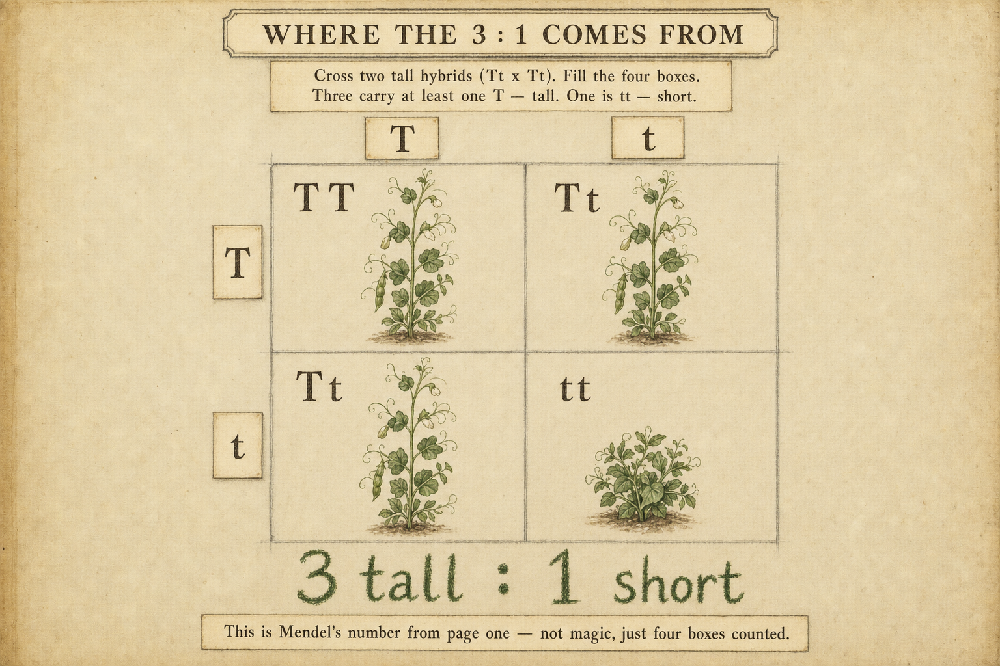
Peas are also either round R or wrinkled r, with round dominant. Before reading on, draw a square for Rr × Rr and fill the four boxes. What ratio of round to wrinkled do you predict? (You should land on the same shape of answer: 3 round : 1 wrinkled — the machine doesn't care what trait you feed it.)
The 3 : 1 we just found is true — but it is only half the story, and the hidden half is tidier than the visible one. To see it, we need to separate two ideas that are easy to blur together.
Phenotype — what a plant looks like. Tall or short. We will always write this in plain words.
Genotype — which factors a plant actually carries. TT, Tt, or tt. We will always write this in letters.
Plain words for looks, letters for what's carried — keep them apart and the next idea is easy.
Go back to the four boxes of Tt × Tt. By looks (phenotype) they are 3 tall : 1 short, as we saw. But sort them instead by what they carry (genotype), and a different, cleaner pattern appears:
Here is the thing worth slowing down for. The three plants that all look tall are not the same underneath. One of them is pure tall TT. The other two are hybrids Tt — tall on the outside, but each carrying a hidden short factor. Three identical-looking tall plants; two different genotypes inside them.
So the lumpy 3 : 1 you can see is really a clean 1 : 2 : 1 you cannot. The square shows both stories at the same time — the look and the carry. And it explains, exactly, why the short trait keeps coming back: in every generation, two out of three tall plants are secretly ferrying a short factor forward.
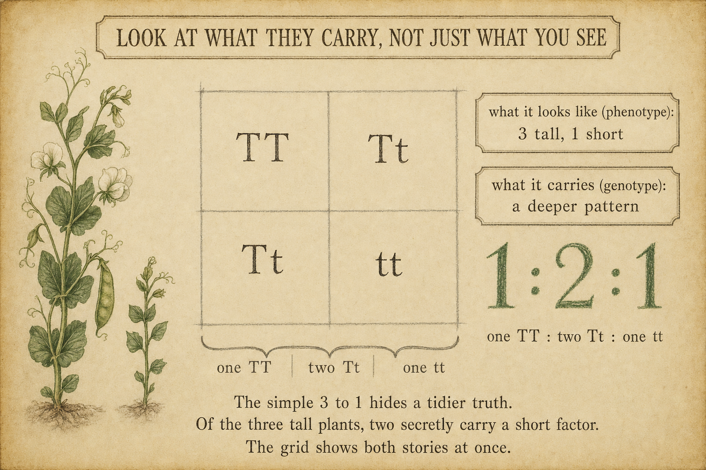
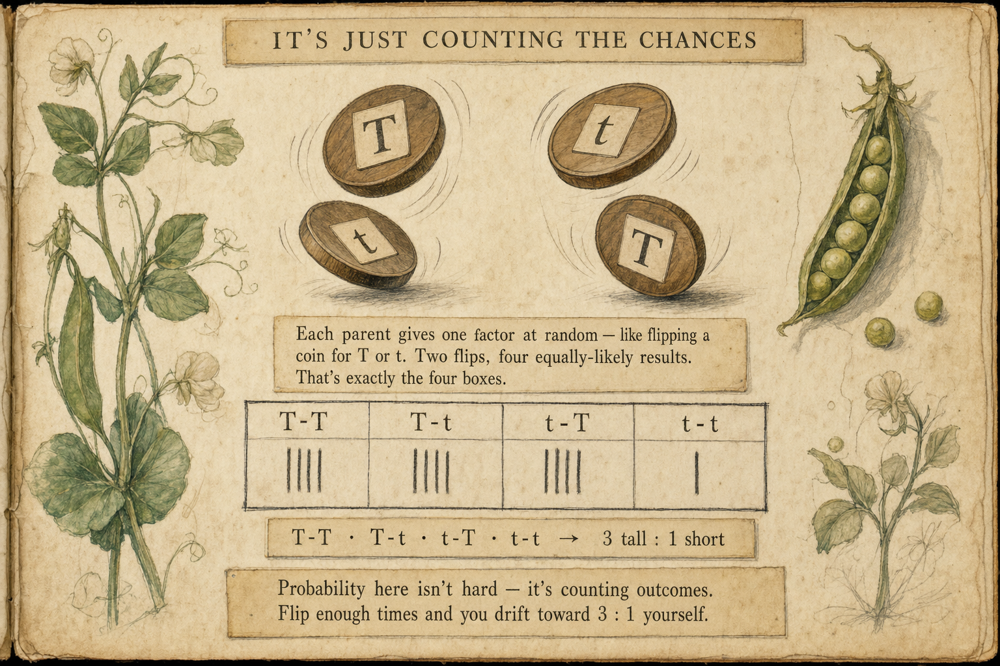
If the square still feels like a special biology trick, here is the plain truth underneath it: a Punnett square is just two coin flips.
A Tt parent passing on a factor is exactly like flipping a coin — heads for T, tails for t, a fair fifty-fifty either way. The cross Tt × Tt is two coins flipped together. Two coins have four equally-likely results — and those four results are the four boxes:
This is a relief, not a complication. It means heredity, at this level, asks nothing harder of you than counting the ways a coin can land. But coins come with a warning that genetics inherits exactly:
Flip two coins four times and you will not reliably get three tall and one short. You might get four tall, or two and two. The 3 : 1 is what you drift toward over many, many tries — which is exactly why Mendel's ratios came out so clean: he counted thousands of plants, not four.
And here is the sneakiest part: the boxes have no memory. A plant that has already had three tall children still has the very same one-in-four chance of a short one next time. Past results never "use up" the odds or make the next outcome owed. Every cross is a fresh flip.
Take two coins. Flip them together sixteen times, writing down each result as tall (at least one heads) or short (two tails). The square predicts about 12 tall and 4 short. How close did you land? Do it again — you'll get a different count each time, all hovering around 3 : 1. That wobble is what "probability, not certainty" means.
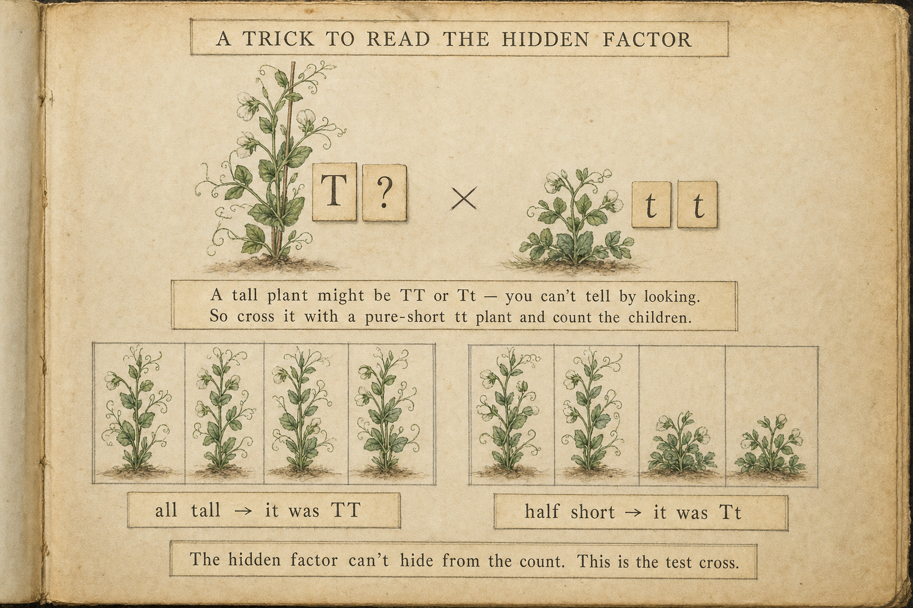
We have a real problem to solve, and the machine solves it cleanly. Suppose you are holding a tall pea plant. Is it pure tall TT, or is it a hybrid Tt hiding a short factor? You cannot tell by looking — both are tall. Same phenotype, different genotype. (This is precisely the genotype-versus-phenotype gap from page seven, now standing in your way.)
The trick is to cross the mystery plant with a pure-short tt partner and count the children. Why a pure-short partner? Because tt can only ever pass on a t — it adds nothing of its own to the disguise, so whatever the children show comes entirely from the mystery plant.
Two outcomes, two verdicts:
If the mystery plant is TT: it can only give T. Paired with the tester's t, every child is Tt — all tall.
If the mystery plant is Tt: it gives T half the time and t the other half. Paired with the tester's t, the children come out about half Tt (tall) and half tt (short) — so any short child at all exposes the hidden factor.
So the rule is wonderfully blunt: all tall → it was TT. Even one short → it was Tt. The hidden factor cannot hide from a count. Breeders call this a test cross, and it is the everyday tool for reading a genotype you can't see.
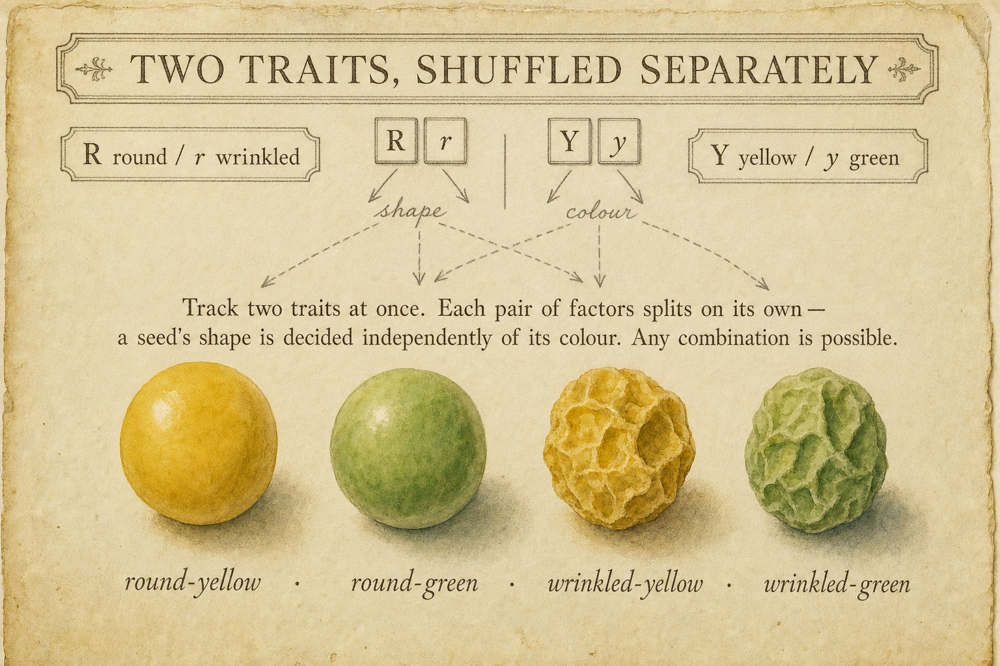
So far we have followed one trait at a time. But a pea has many. Let's track two of them at once and see whether the machine still holds. We'll watch seed shape — round R or wrinkled r — and seed colour — yellow Y or green y. (Round and yellow are the dominant versions.)
Mendel's discovery here is the one that makes everything scale: the two traits sort independently. A seed deciding whether to be round or wrinkled does not care, in the slightest, whether it is turning out yellow or green. The shape coin and the colour coin are flipped separately.
Because they don't interfere, every combination is possible, and you really do find all four out in the garden:
round & yellow · round & green · wrinkled & yellow · wrinkled & green
That word — independently — is the hinge of the next page. When two things happen independently, there is a beautifully simple way to find the chance of both. And it turns the most intimidating ratio in all of Mendel's work into something you can do in your head.
Cross two plants that are hybrid for both traits — RrYy × RrYy — and the offspring come out in the ratio 9 : 3 : 3 : 1. That number looks like it should require a big, frightening sixteen-box grid. It does not. There is a way to see exactly where it comes from using nothing you haven't already met.
The secret is the word from the last page: the two traits are independent. So look at each trait on its own first. Each one is just an ordinary hybrid cross — the 3 : 1 we have known since page six:
Now the one new tool, and it is a rule of plain probability: when two independent things must both happen, you multiply their chances. (The chance of flipping heads and rolling a six is the chance of heads times the chance of a six.) So to get the chance of each shape-and-colour combination, multiply:
round & yellow = ¾ × ¾ = 9/16
round & green = ¾ × ¼ = 3/16
wrinkled & yellow = ¼ × ¾ = 3/16
wrinkled & green = ¼ × ¼ = 1/16
9 : 3 : 3 : 1
That is the whole thing. The famous 9 : 3 : 3 : 1 is not a new law to memorise — it is two small 3 : 1 ratios multiplied together. The biggest number in Mendel's garden is built from the smallest one you already understood.
If you do draw the full grid, you get the same answer the long way: two traits means four possible factors from each parent (RY, Ry, rY, ry), so the square grows to 4 × 4 = sixteen equally-likely boxes. Sort them by looks and they fall into groups of 9, 3, 3, and 1 — exactly what the multiplying told us in two lines.
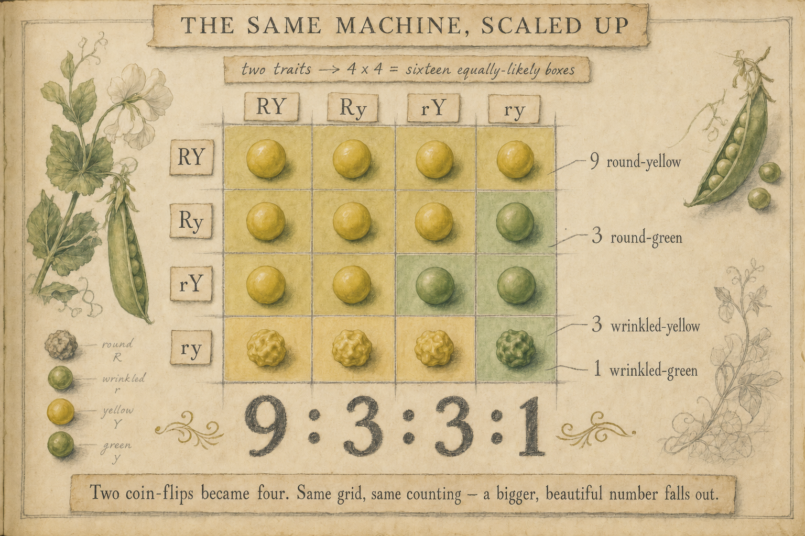
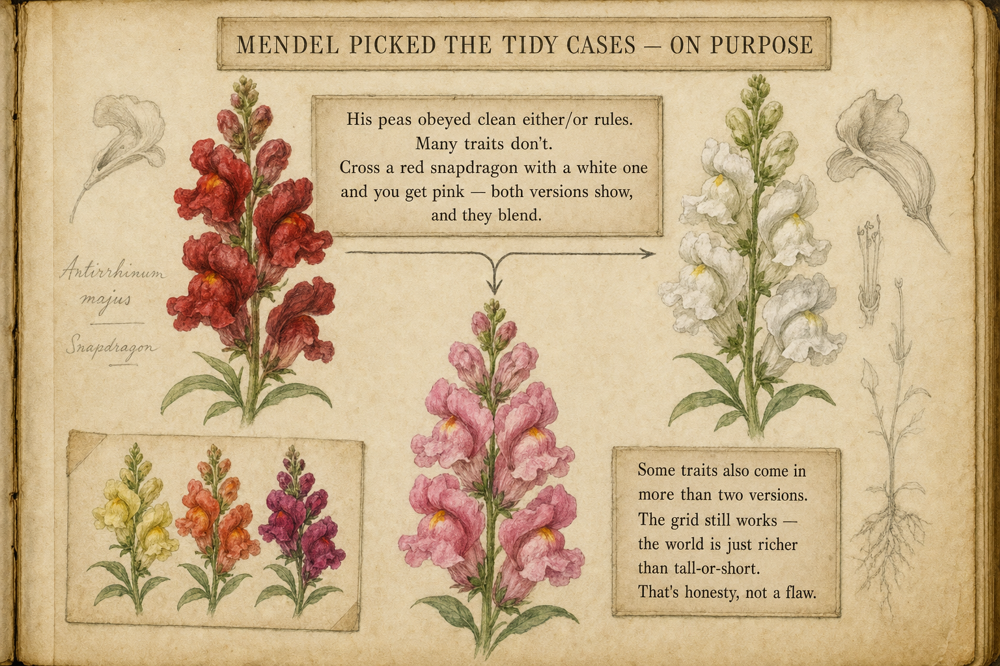
We owe you some honesty before the finish, because a good explanation does not quietly hide its own limits. Mendel's peas obeyed beautifully tidy rules — clean either/or traits, one factor neatly dominant over the other. Plenty of living things do not behave so politely, and pretending otherwise would be the kind of rug-sweeping this book refuses to do.
Three honest complications:
Sometimes neither version hides. Cross a red snapdragon with a white one and you don't get red — you get pink. Both factors show at once and blend. (Peas never did this, which is part of why Mendel chose them.)
Sometimes there are more than two versions. Our traits had exactly two factors, T or t. Some traits come in three or more versions — human blood type is a classic case.
Sometimes many factors team up. Height in people isn't one tall-or-short switch; it's the sum of many factors plus food and health, which is why people come in every height and not just "tall" or "short."
None of this breaks the machine. The Punnett square still does its honest accounting — you just sometimes need more boxes, more letters, or a rule about blending. The world is simply richer than tall-or-short.
And here is the deliberate part: Mendel chose the tidy cases on purpose. He picked traits that came in clean pairs precisely so the hidden arithmetic could show itself clearly the first time anyone looked. Starting simple wasn't a way of dodging the hard cases — it was the only way to discover the rule that the hard cases bend.
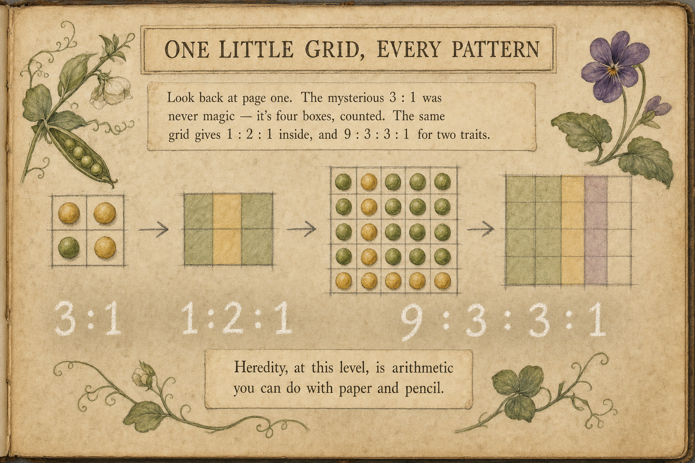
Look back at page one. The mysterious 3 : 1 that kept appearing in Mendel's garden — the number that started this whole book — is now something you can derive in under a minute, and explain to someone else.
It was never magic. It is four boxes, counted. And the same four-box machine, looked at the right way, hands you everything else:
3 : 1 — what a hybrid cross looks like (phenotype).
1 : 2 : 1 — what the same cross carries (genotype), hidden inside the 3 : 1.
9 : 3 : 3 : 1 — two traits at once, just two 3 : 1's multiplied.
One idea runs under all of it: a factor is passed down at random, like a coin, and a grid is simply the honest count of how the coins can land. That is the entire engine. From it falls every ratio Mendel spent years tallying by hand.
Heredity, at this level, is not a mystery and not magic. It is arithmetic — the kind you can do with paper, a pencil, and a steady habit of counting.
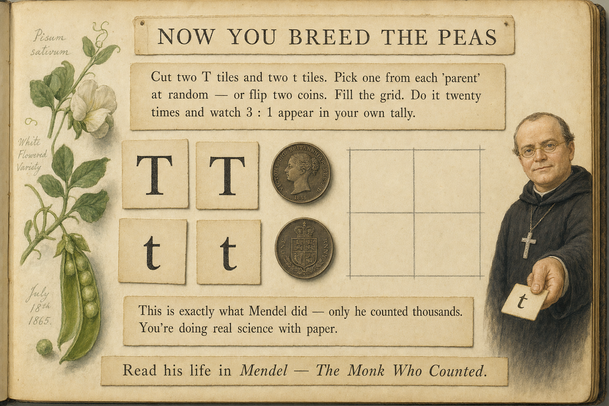
You don't have to take any of this on faith. You can run Mendel's experiment yourself this afternoon, with things already in the house.
1. Cut four small cards: two marked T and two marked t. Give each "parent" one T and one t — both parents are hybrids, just like Mendel's.
2. For each child, take one card at random from each parent (turn them face-down and pick), and write down the pair. Or just flip two coins — heads T, tails t.
3. Mark each child tall (any T) or short (tt). Do it twenty times and keep a tally.
4. Count up. You will land near 3 tall : 1 short — not exactly, but close, and closer the more rounds you run.
When you do this, you are not playing at science — you are doing the real thing. This is exactly what Mendel did. The only difference is the scale: where you tally twenty, he tallied thousands, season after patient season, until the ratio was unmistakable.
That patience — the willingness to count and count until a hidden rule shows itself — is the whole story of the monk who started all this. If you'd like to meet him, his life is the companion to this book: Mendel — The Monk Who Counted.
Six words carry the whole book. Here they are together, so you never have to hunt back through the pages for one.
Six questions about the WHY, not the what.
Mendel found a mysterious three-to-one hiding in his garden. Underneath it was a grid of four boxes you can fill in yourself — and from it falls the 3 : 1, the hidden 1 : 2 : 1, and, scaled up, the 9 : 3 : 3 : 1. None of it was magic. Just outcomes, counted.
A companion to Mendel — The Monk Who Counted